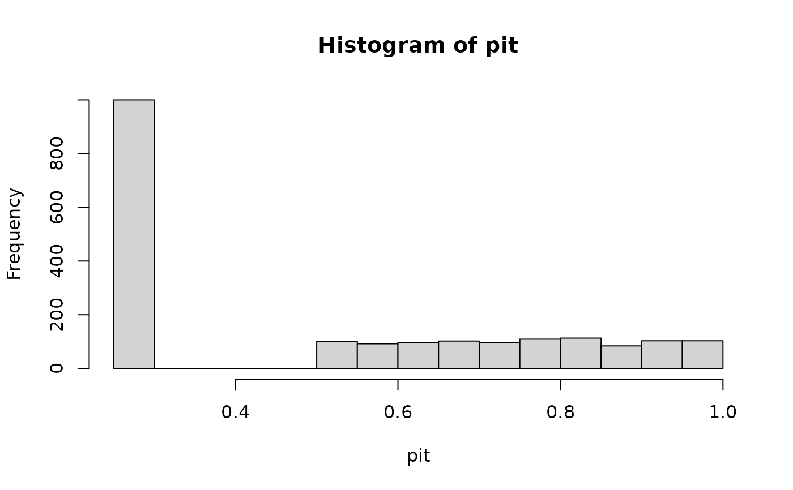
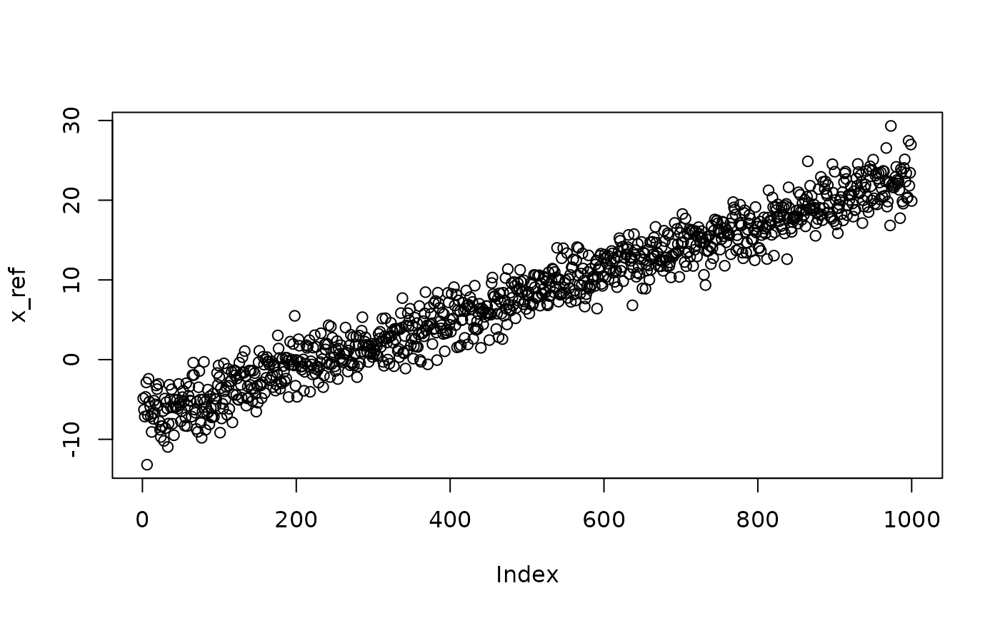
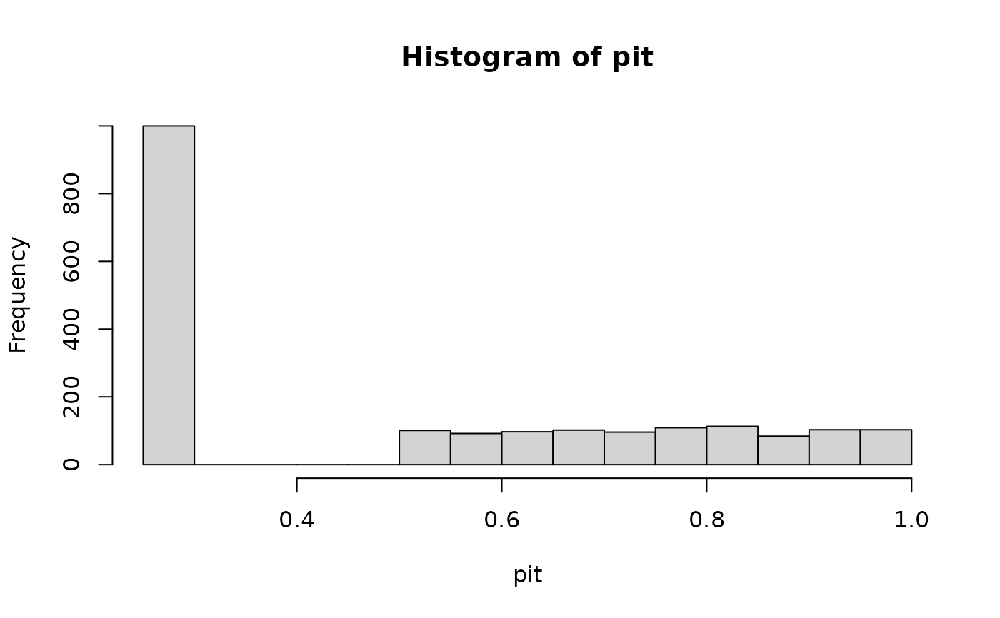
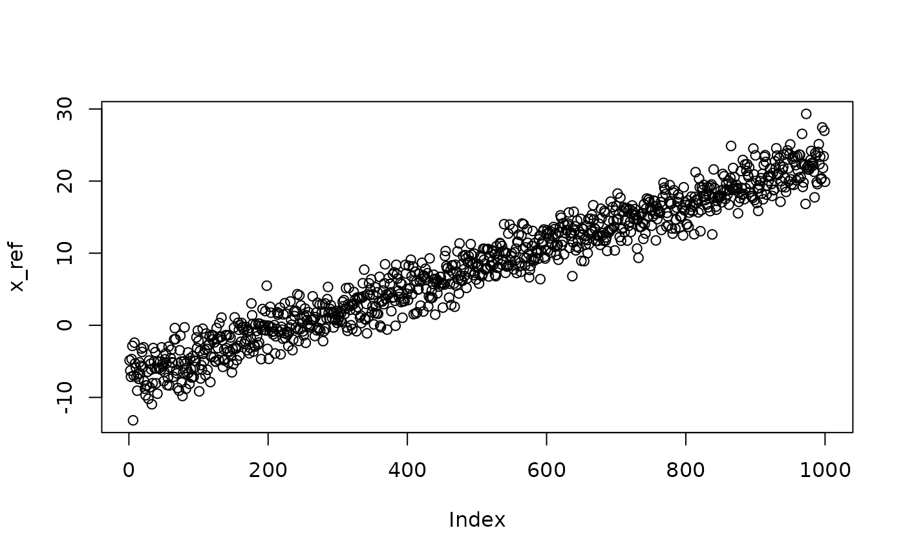

Function to estimate the cumulative distribution function (CDF) from a set of observations, and return the corresponding probability integral transform (PIT) values.
Usage
get_pit(
x_ref,
x_new = x_ref,
dist = "empirical",
preds_ref = NULL,
preds_new = preds_ref,
method = "mle",
return_fit = FALSE,
lower = -Inf,
upper = Inf,
cens = "none",
n_thres = 10,
...
)Arguments
- x_ref
numeric vector from which to estimate the CDF.
- x_new
numeric vector from which to calculate the PIT values.
- dist
character string specifying the distribution to be fit to the data; one of
'empirical','kde','norm','lnorm','logis','llogis','exp','gamma', and'weibull'.- preds_ref
data frame of predictor variables on which the estimated distribution should depend, corresponding to the reference observations
x_ref.- preds_new
data frame of predictor variables on which the estimated distribution should depend, corresponding to the new observations
x_new.- method
A character string coding for the fitting method:
"mle"for 'maximum likelihood estimation',"mme"for 'moment matching estimation',"qme"for 'quantile matching estimation',"mge"for 'maximum goodness-of-fit estimation' and"mse"for 'maximum spacing estimation'.- return_fit
logical specifying whether to return parameters and goodness-of-fit statistics for the distribution fit.
- lower, upper
numeric values specifying the lower and upper bounds at which the values in
x_refandx_neware censored.- cens
method used to deal with censoring of the PIT values; either a string (
'none','normal'or'prob'), corresponding to common choices, or a custom numeric value.- n_thres
minimum number of data points required to estimate the distribution; default is 10.
- ...
Value
A vector of PIT values if return_fit = FALSE, or, if return_fit = TRUE,
a list containing the estimated distribution function (F_x), its parameters
(params), and properties of the fit such as the AIC and
Kolmogorov-Smirnov goodness-of-fit statistic (fit). If the estimated distribution
function depends on covariates, then the gamlss model fit is returned as the
parameters.
Details
Continuous data
If \(X\) is a continuous random variable with cumulative distribution function (CDF)
\(F\), then the probability integral transform (PIT) \(F(X)\) is uniformly distributed
between 0 and 1. Given a vector \(x_{1}, \dots, x_{n}\) of realisations of \(X\),
get_pit produces an estimate \(\hat{F}\) of the CDF \(F\), and returns a
vector of PIT values corresponding to another set of realisations \(z_{1}, \dots, z_{N}\),
$$\hat{F}(z_{1}), \dots, \hat{F}(z_{n}).$$
x_ref contains the values \(x_{1}, \dots, x_{n}\) from which the CDF estimate
\(\hat{F}\) is obtained. x_new contains the values \(z_{1}, \dots, z_{n}\)
from which the PIT values \(\hat{F}(z_{1}), \dots, \hat{F}(z_{n})\) are calculated.
By default, x_ref and x_new are the same, so that the PIT values are
calculated in-sample.
To estimate the distribution, get_pit calls fit_dist. The arguments
dist, method and n_thres are
documented in detail in the corresponding help page.
To check that the chosen distribution adequately fits the data, the argument
return_fit = TRUE can be used to return the estimated parameters of the
distribution, as well as properties of the fit such as the AIC and a p-value
for the Kolmogorov-Smirnov goodness-of-fit test.
Non-stationary distributions
The estimated distribution can also be non-stationary, by depending on some predictor variables or covariates.
These predictors can be included via the arguments preds_ref and preds_new,
which should be data frames with a separate column for each predictor, and with
numbers of rows equal to the lengths of x_ref and x_new, respectively.
In this case, a Generalized Additive Model for Location, Scale, and Shape (GAMLSS) is
fit to x_ref using the predictors in preds_ref.
The PIT values corresponding to x_new are then calculated by applying the
estimated distribution with predictors preds_new.
If a non-stationary distribution is to be estimated, both preds_ref and
preds_new must be provided. By default, preds_new is assumed to be
the same as preds_ref, to align with x_new being the same as x_ref.
Censored data
If the random variable \(X\) is not continuous, the PIT will not be uniformly distributed.
A relevant case is when \(X\) is censored. For example, precipitation is censored below
at zero. This results in several PIT values being equal to \(F(0)\). The lower
and upper arguments to get_pit allow the user to specify the lower and upper
bounds at which the data is censored; the default is lower = -Inf and upper = Inf,
i.e. there is no censoring.
If the PIT values are used to construct standardised indices, this censoring can lead to unintuitive index values. To deal with censored data, it has been proposed to map the PIT values of the censored values to a different constant \(c\); see references. For example, for precipitation, the PIT values would become $$F(X) \quad \text{if} \quad X > 0,$$ $$c \quad \text{if} \quad X = 0.$$ The constant \(c\) can be chosen so that the PIT values satisfy some desired property. For example, if \(F(X)\) is uniformly distributed between 0 and 1, then it has mean equal to \(1/2\). Hence, \(c\) could be chosen such that the mean of the PIT values of the censored distribution are equal to \(1/2\). Alternatively, if \(F(X)\) is uniformly distributed between 0 and 1, then the transformed PIT value \(\Phi^{-1}(F(X))\) (where \(\Phi^{-1}\) is the quantile function of the standard normal distribution) follows a standard normal distribution, and therefore has mean equal to 0. The constant \(c\) could therefore be chosen such that the mean of the transformed PIT values of the censored distribution are equal to 0.
The argument cens in get_pit can be used to treat censored data. cens
can be one of four options: a single numeric value containing the value \(c\) at which to
assign the PIT values of the censored realisations; the string 'none' if no censoring
is to be performed; the string 'prob' if \(c\)
is to be chosen automatically so that the mean of the PIT values is equal to \(1/2\);
or the string 'normal' if \(c\) is to be chosen automatically so that the mean of
the transformed PIT values is equal to 0. If the data is censored both above and below,
then cens must be a numeric vector of length two, specifying the values to assign
the realisations that are censored both below and above.
When the data is censored, dist corresponds to the distribution used to estimate the
uncensored realisations, e.g. positive precipitations. The probability of being at the boundary
points is estimated using the relative frequency of censored observations in x_ref.
References
Rigby, R. A., & Stasinopoulos, D. M. (2005): `Generalized additive models for location, scale and shape', Journal of the Royal Statistical Society Series C: Applied Statistics 54, 507-554. doi:10.1111/j.1467-9876.2005.00510.x
Stagge, J. H., Tallaksen, L. M., Gudmundsson, L., Van Loon, A. F., & Stahl, K. (2015): `Candidate distributions for climatological drought indices (SPI and SPEI)', International Journal of Climatology 35, 4027-4040. doi:10.1002/joc.4267
Allen, S. & N. Otero (2023): `Calculating standardised indices using SEI', EarthArXiv pre-print. doi:10.31223/X5GM4G
Examples
N <- 1000
shape <- 3
rate <- 2
x_ref <- rgamma(N, shape, rate)
x_new <- rgamma(N, shape, rate)
# empirical distribution
pit <- get_pit(x_ref, x_new)
hist(pit)
 # gamma distribution
pit <- get_pit(x_ref, x_new, dist = "gamma", return_fit = TRUE)
hist(pit$pit)
# gamma distribution
pit <- get_pit(x_ref, x_new, dist = "gamma", return_fit = TRUE)
hist(pit$pit)
 hist(x_ref, breaks = 30, probability = TRUE)
lines(seq(0, 10, 0.01), dgamma(seq(0, 10, 0.01), pit$params[1], pit$params[2]), col = "blue")
hist(x_ref, breaks = 30, probability = TRUE)
lines(seq(0, 10, 0.01), dgamma(seq(0, 10, 0.01), pit$params[1], pit$params[2]), col = "blue")
 # weibull distribution
pit <- get_pit(x_ref, x_new, dist = "weibull", return_fit = TRUE)
hist(pit$pit)
# weibull distribution
pit <- get_pit(x_ref, x_new, dist = "weibull", return_fit = TRUE)
hist(pit$pit)
 hist(x_ref, breaks = 30, probability = TRUE)
lines(seq(0, 10, 0.01), dweibull(seq(0, 10, 0.01), pit$params[1], pit$params[2]), col = "blue")
hist(x_ref, breaks = 30, probability = TRUE)
lines(seq(0, 10, 0.01), dweibull(seq(0, 10, 0.01), pit$params[1], pit$params[2]), col = "blue")
 # exponential distribution
pit <- get_pit(x_ref, x_new, dist = "exp", return_fit = TRUE)
hist(pit$pit)
# exponential distribution
pit <- get_pit(x_ref, x_new, dist = "exp", return_fit = TRUE)
hist(pit$pit)
 hist(x_ref, breaks = 30, probability = TRUE)
lines(seq(0, 10, 0.01), dexp(seq(0, 10, 0.01), pit$params[1]), col = "blue")
# gamma distribution with censoring
x_ref <- c(x_ref, numeric(N))
pit <- get_pit(x_ref, dist = "gamma", lower = 0, cens = "prob")
hist(pit)

mean(pit) # = 1/2
#> [1] 0.5006377
mean(qnorm(pit)) # != 0
#> [1] 0.0624038
pit <- get_pit(x_ref, dist = "gamma", lower = 0, cens = "normal")
hist(qnorm(pit))
mean(pit) # != 1/2
#> [1] 0.4818721
mean(qnorm(pit)) # = 0
#> [1] 0.0007063971
## normal distribution with trend in mean
x <- seq(-10, 20, length.out = N)
x_ref <- rnorm(N, x + shape, 2)
plot(x_ref)

preds <- data.frame(t = x)
pit <- get_pit(x_ref, preds_ref = preds, dist = "norm")
hist(pit)
## normal distribution with trend in mean and standard deviation
x_ref <- rnorm(N, x + shape, exp(x/10))
plot(x_ref)
hist(x_ref, breaks = 30, probability = TRUE)
lines(seq(0, 10, 0.01), dexp(seq(0, 10, 0.01), pit$params[1]), col = "blue")
# gamma distribution with censoring
x_ref <- c(x_ref, numeric(N))
pit <- get_pit(x_ref, dist = "gamma", lower = 0, cens = "prob")
hist(pit)

mean(pit) # = 1/2
#> [1] 0.5006377
mean(qnorm(pit)) # != 0
#> [1] 0.0624038
pit <- get_pit(x_ref, dist = "gamma", lower = 0, cens = "normal")
hist(qnorm(pit))
mean(pit) # != 1/2
#> [1] 0.4818721
mean(qnorm(pit)) # = 0
#> [1] 0.0007063971
## normal distribution with trend in mean
x <- seq(-10, 20, length.out = N)
x_ref <- rnorm(N, x + shape, 2)
plot(x_ref)

preds <- data.frame(t = x)
pit <- get_pit(x_ref, preds_ref = preds, dist = "norm")
hist(pit)
## normal distribution with trend in mean and standard deviation
x_ref <- rnorm(N, x + shape, exp(x/10))
plot(x_ref)
 preds <- data.frame(t = x)
pit <- get_pit(x_ref, preds_ref = preds, dist = "norm", sigma.formula = ~ .)
hist(pit)
preds <- data.frame(t = x)
pit <- get_pit(x_ref, preds_ref = preds, dist = "norm", sigma.formula = ~ .)
hist(pit)
 # sigma.formula is an optional argument in the gamlss::gamlss function
# sigma.formula is an optional argument in the gamlss::gamlss function